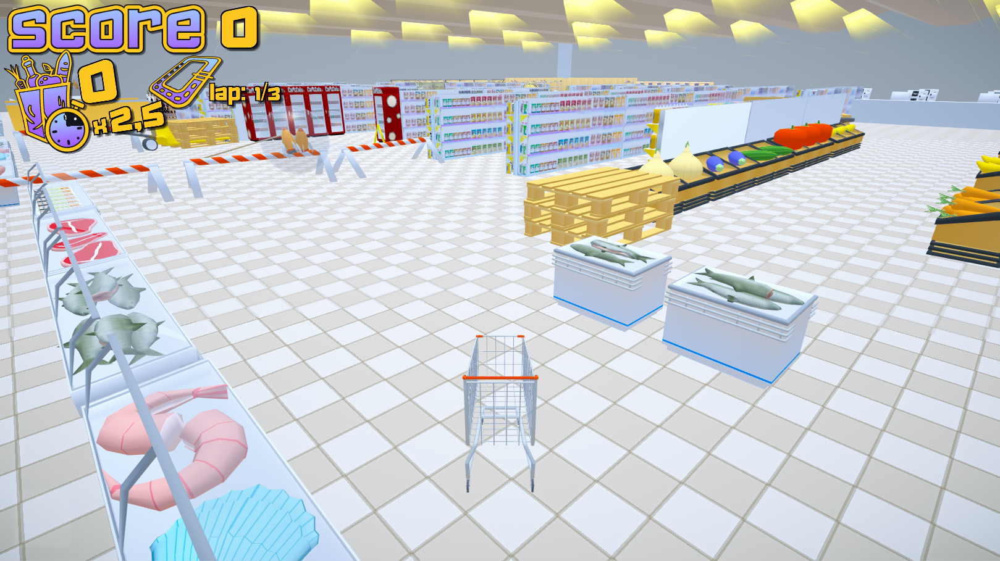
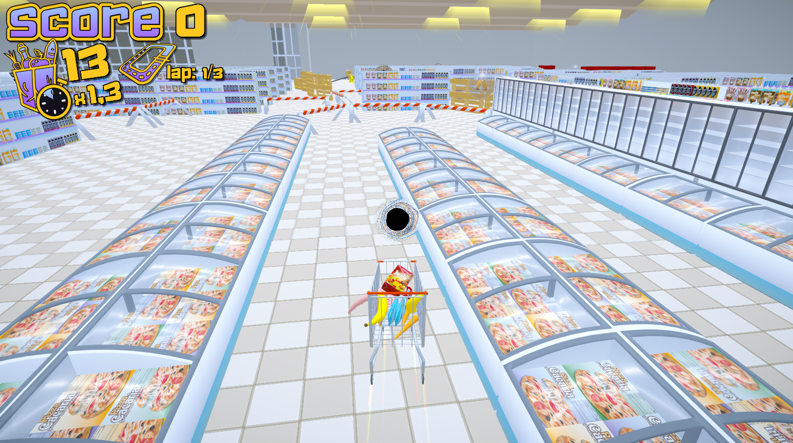
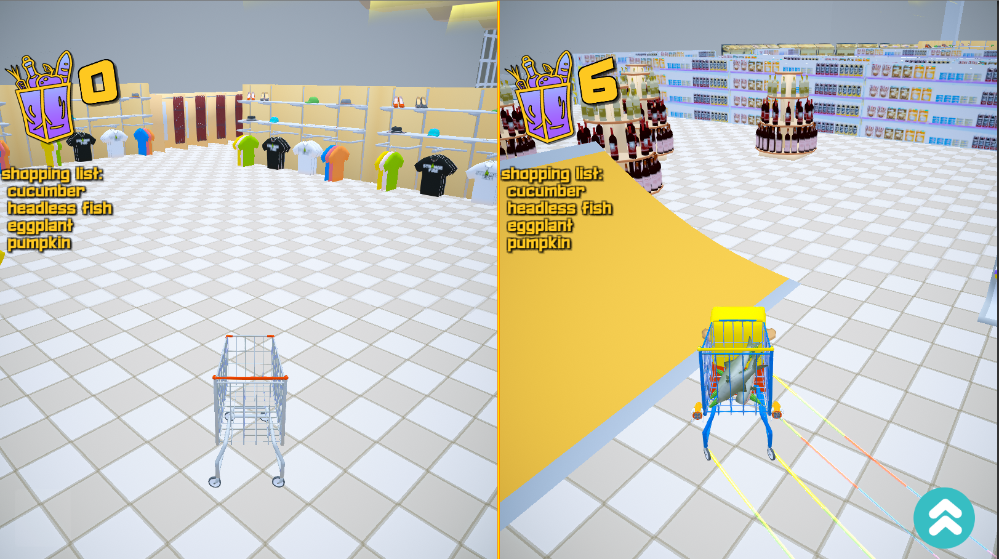

It all started with me realizing that my studies were not a great fit for me. I began learning 3D on my own as a hobby as well as a potential way of making a living. Below are a few exmples of my very first commercial work for event visual effects / promotion videos.
Martynas Štalis
Over the last five years I have gathered experience in multiple areas of 3D as well as game development. These are random moments captured along the way that I managed to save or salvage.
Since video games have always been a part of my life, I began to see an opportunity to use my skills to make them, so I have dedicated myself to learning code. After some time of learning C# and Unity, I was offered a programmer position at Strange Fire. At that time, the team was developing a Shoppe Keep sequel. Me, still being very new to the industry, began making my own title under lead programmer's mentornship. Below is a snippet from my first Unity project without a tutorial.
When it was time to move on to a visual polish stage, I had an opportunity to improve my 3D modelling knowledge and include basics of animation to my skillset.
Not very long after, I was granted an opportunity to develop my own title on a Nintendo Switch platform, which lead me to become sort of a game designer. The game was meant to be played either alone or compete against a friend via a splitscreen. It offered several different game-modes where players competed either among each other or against a high score. Below are a couple of snippets of a very early development stage.
This was the first time I had a team to assist me with certain areas of development, such as UI, textures and sound design. Unfortunately, the GIF capture software used at the time did not capture audio.
Considering that the game was being developed for a Nintendo Switch, I had to learn to make performant games. Every single object in this game except for power-up effects, either solid-color or textured, used the same material and an atlas sheet for textures.
In about 3 to 4 months, the game was ready to be considered a prototype.




The game has never moved past the prototype stage as I was offered a place in developing the main title Shoppe Keep 2. I was mainly a programmer, responsible for ambience features, such as weather system, wildlife, water, also some standalone features, such as networked containers, custom area detection system, custom tools and etc.
A snippet of a 3D bezier curve creator that I used for setting bird fly paths.
Another area I found myself in was shader development, which offered a lot of solutions to otherwise performance-heavy features. Below is a fish animated using only a shader.
GPU instanced particles with shader based animation, forming schools of fish.
Underwater ambience: half-space depth based fog, surface, rays and caustics.
Water shader was made with Shader Forge, node setup below.
Underwater ambience changing based on the time of day.
Complete ambience with fishes and vegetation.
I also had a chance to work as an additional animator for the team, a few examples below.

I have focused on adding industry standard software to my toolset, such as Substance Designer, Substance Painter and Substance Alchemist.
Writing / creating shaders and achieving realistic graphics was a new area not yet explored. Below are a few remaining examples of my experiments.
A velvet shader made for a realtime interior in Unity.